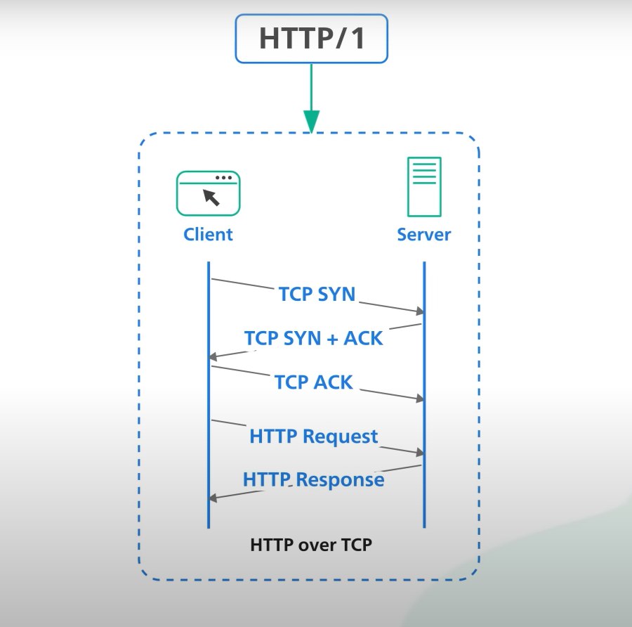

HTTP history
HTTP (Hypertext Transfer Protocol) is the backbone of the internet, responsible for transmitting data between web browsers and servers. The first version, HTTP 1.0, was introduced in 1996 and has since been updated to HTTP 1.1, which was first defined in 1999. One of the main differences between the two versions is the way they handle connections.
HTTP1.0
HTTP 1.0 uses a separate connection for each request, while HTTP 1.1 can reuse a single connection for multiple requests. This results in faster transfer speeds, as the overhead of creating a new connection is eliminated. Another difference is the way HTTP 1.1 handles caching. HTTP 1.0 relies on the "Expires" header to determine if a cached resource is still valid, while HTTP 1.1 uses the "Cache-Control" header and "ETag" header which allow for more precise control over caching.
{kind=link}
HTTP1.1
HTTP 1.1 also introduced new methods such as PUT and DELETE, in addition to the existing GET and POST methods. This allows for more flexibility in interacting with web resources. Another important feature of HTTP 1.1 is support for the "Host" header, which allows a single IP address to host multiple websites. In HTTP 1.0, the IP address of the server must match the domain name of the website. In addition, HTTP 1.1 includes the "chunked transfer encoding" which allows the server to send data in chunks to the client in real-time, rather than waiting until the entire response is ready. This feature is useful for long-polling, server-sent events and streaming. In conclusion, while HTTP 1.0 is still in use, HTTP 1.1 is the preferred version of the protocol, as it offers improved performance, caching capabilities, and flexibility. Most modern web browsers and servers support HTTP 1.1, making it the de facto standard for web communication.